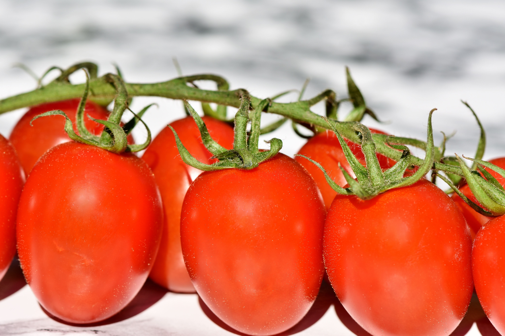

La importancia del tomate en la alimentación diaria
El tomate es uno de los alimentos más consumidos en el mundo gracias a su versatilidad, sabor y valor nutricional. Puede disfrutarse fresco en ensaladas, cocinado en sopas, salsas o como ingrediente principal de innumerables recetas.
El tomate es uno de los alimentos más consumidos en el mundo gracias a su versatilidad, sabor y valor nutricional. Puede disfrutarse fresco en ensaladas, cocinado en sopas, salsas o como ingrediente principal de innumerables recetas.

Su bajo contenido calórico lo convierte en una opción ideal para quienes desean mantener una alimentación equilibrada. Al mismo tiempo, su alto contenido de agua contribuye a la hidratación y su fibra favorece una buena digestión.
Incluir tomates en la dieta diaria es una forma sencilla de disfrutar de un alimento saludable, económico y lleno de sabor. Ya sea en una ensalada fresca, una salsa casera o un jugo natural, el tomate siempre aporta beneficios y un excelente valor nutricional.